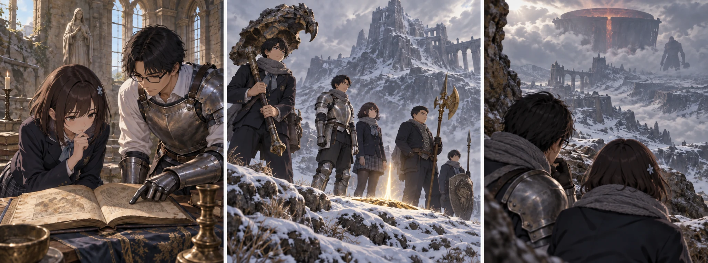

DAY81 / TURN1−91
進む人を、決める朝。

葵「あと、どれだけ要るのかは、私にも教えてください」
【DAY81｜雨のあとの朝】先生が目を開けた時、教会の石はまだ濡れていた。赤い月が消えたからといって、徹夜した身体まで朝になるわけではない。最後の見張りを交代した者から眠り、遅い食事を取った。誰も欠けなかった夜の話は、鍋の周りで少しずつ繰り返された。真央は凛に袋を渡した時のことを、まだ一度も自分から話していない。
先生は地図の脇に、残りの日を並べた。今日を使える朝なら十九日。今日を終えれば十八日。九十日目の赤月までに、どこまで進み、どこから帰るのか。以前のように、慣れるまで同じ兵士を相手にする十日間は、もう取れなかった。
【持っている力を数える】葵は、自分の前に置いた祈祷の記録を開いた。「黄金樹の恵み」。手にしてから、何度も読んだ名だった。周囲へ回復を行き渡らせる術。それが今使えれば、という考えは、雨の夜にも頭を離れなかった。だが、文字を読めることと、術を支えられることは違う。必要な信仰は三十八。今の自分は二十三だった。
「あと、どれだけ要るのかは、私にも教えてください」。葵は先生の筆先を見た。足りないとだけ言われると、自分がどこに立っているのか分からなくなる。「十五段階。全部なら二千二百」。先生は数字を隠さず書いた。財布は八百二十八。道中の補給に三百は残す。今日は四段階、四百八十ルーンまでだった。
【集中育成｜葵LV45→49／信仰23→27】祝福の傍らで、葵は掌を見つめた。強くなった手が光って、いきなり新しい術を使えるわけではなかった。胸の奥で支えられるものが、少し増えたように思う。それでも記録にある祈りを最後まで形にはできない。先生は残り十一段階、千七百二十ルーンと書き直した。葵はその紙を、自分の記録に挟んだ。
「今までの回復を、できないことにしなくていいんですよね」。紬の声に、葵が頷いた。今日の四段階で、使える回数まで増えたことにはしない。誰を先に治し、誰がその間を支えるか。今使える術の相談なら、自分も最初から加われる。強い術に届かないことを、席を外す理由にしなくてよかった。
先生は、まだ交換していない追憶の名も余白へ残した。武器や術に替えるか、ルーンにするか。選択肢はある。ただ、この世界でどれほどのルーンへ変わるのかを、確かめずに予算へ足すわけにはいかない。今日は使わず残す。財布にある額と、まだ選び直せるものを、同じ数字に混ぜなかった。
【誰が先へ行くか】「先生だけが先に行けば、早いですか」。蓮の問いに、先生は一度、火の釜の麓の印を指した。「そこまでは、全員が自分で着いている。戻る速さは変わらない」。祝福への移動で省ける道を、もう一度一人で歩く必要はなかった。問題は、その先だった。
先生は雪の向こうで見た巨大な姿を思い出した。自分が近寄れば、動きは見られるかもしれない。その時に受ける一撃を、一人なら誰も肩代わりできない。帰ってこなかった時の手順があっても、失った時間まで戻るわけではない。「今回は十三人で行く。戦う前の確認を、皆で済ませたい」
陽太は、人数分の丸を一か所に描かなかった。先生と前衛、弓を使う者、術で支える者を離して置く。先生が注意を引いても、敵の向きがいつまでも固定される保証はない。炎が広がる場所へ全員が追いつめられれば、数の利はなくなる。「先生が下がる時、こっちまで一緒に下がらない」。花は自分の丸から別の方向へ線を引いた。
悠は初級の魔力弾とアーク、流星の使い分けを口にし、大地は黄金のハルバードを膝から外した。使えるものを確認する会議で、今日手に入れていない魔術を数える者はいなかった。クララも、呼べる場所に立っているかを見てからだ。先生が一人で全部を引きつける計画には、しなかった。
【教会の昼｜調達2d6＝3・5＋4＝12】主力が準備している間、翼たちは近場へ出た。航の矢は六本。三頭分の獲物を持ち帰り、三便で水を汲んで処理する。遠征へ出ない二十人にも、今日の予定があった。食事を作り、濡れた覆いを干し、赤い雨の入らなかった保存食を携行分に分ける。結衣は受け持つ人数を名簿で確かめた。
【午後｜火の釜の麓へ】先生は十三人の顔を見てから祝福に触れた。教会にいた二十人まで、知らない土地へ連れていくことはできない。移動できるのは、前の遠征でこの地点まで来た者だけだ。温い湿気が消え、次に頬を打った空気は冷たかった。足元の雪と、見覚えのある遮蔽。誰も新しい土地へ運ばれたわけではないのに、戻ってきたという実感だけは強かった。
陸は大剣を持ち直した。直人の大竜爪、大地の黄金の刃、健太の盾が雪の明るさを返す。身につけているものは出発した頃と違う。けれど、その重さで滑れば、足は止まる。互いの歩幅を確かめながら、既に知っている場所の中で動いた。敵の領域を試すために、一人だけ前へ走る者はいなかった。
白い靄の向こうには、まだ倒していないものがいる。先生はそれを見つめ、攻略の記憶と重ねた。知っている攻撃を書き出すことはできる。それが、今ここで十三人へどう向くかまでは、先読みのページにも載っていない。今日は霧の内側へ入らない。次に踏み出す足を止めたまま、射線と下がる場所を皆で確認した。
【DAY81｜夕】教会に二十人、麓に十三人。食料は全体で百七食分、うち遠征側に十三食分。矢は三百二十本、財布は三百五十四ルーンになった。明日から数えて、使える日は十八。先生はその数字の下に、誰か一人の名前ではなく、十三人の役割を書いた。今度は、その紙を回してから夜を迎えた。
今回の判定記録
抽選前の条件 · 抽選結果